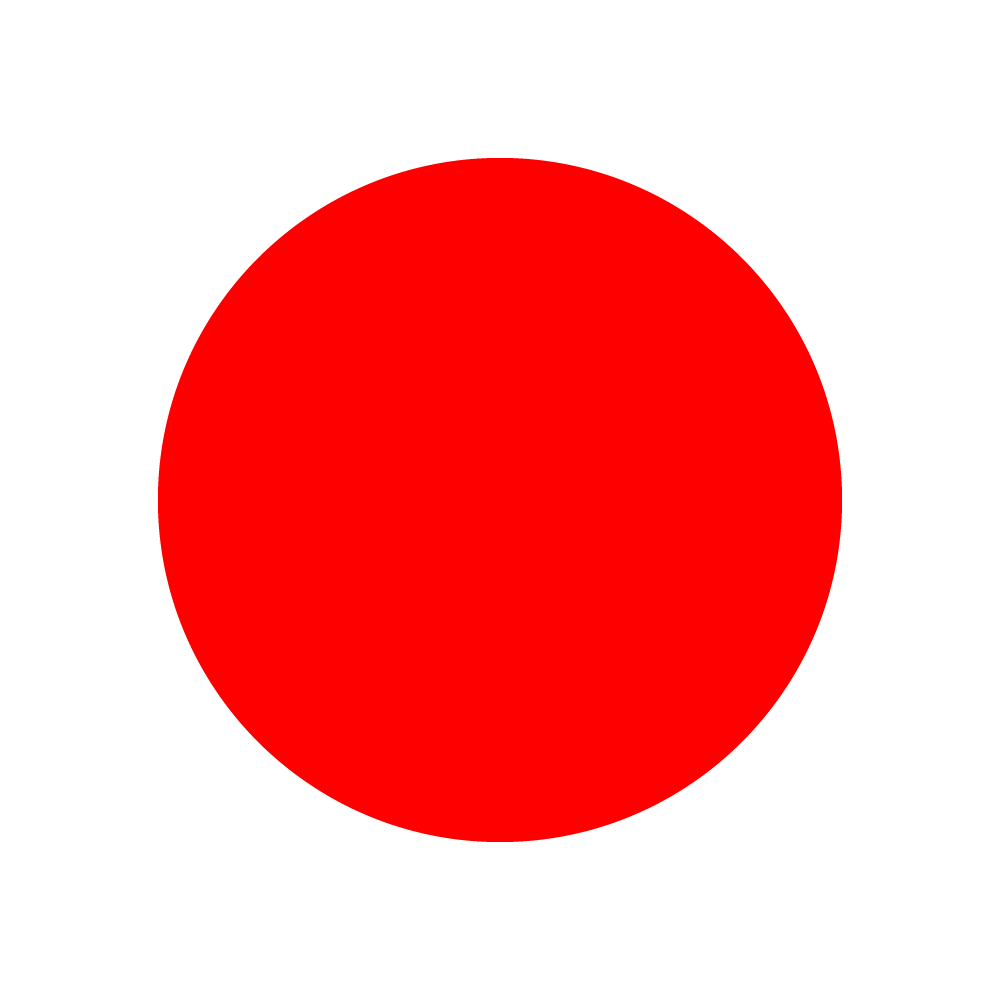

合言葉をどうぞ
入る
ヒント: 犬の名前 (英) / 2年に1度のあれ (英) / 4桁の暗証番号
みんなの動画
—
--:--
—
0.5×
1×
1.5×
2×
まだ動画がありません — 明日また覗いてみて。
タイムライン
フィルター
ランダム
その他
誰の動画を見る?
チャンネル別
マイナーな動画のみ
再生回数 10万未満の動画だけに絞り込みます
その他
並び替え
新着順
テーマ
ライト
通知
オフ
このサイトについて
表示名
(4文字まで)
保存
アイコンを変える
→
オープンモード
あなたがいいねしたことが共有される代わりに、誰がいいねした動画かを知ることができます。
変更したい場合は管理人にご連絡ください
あとで
Continue with Google
きょうの一本
—
0.5×
1×
1.5×
2×
字幕
もう1回